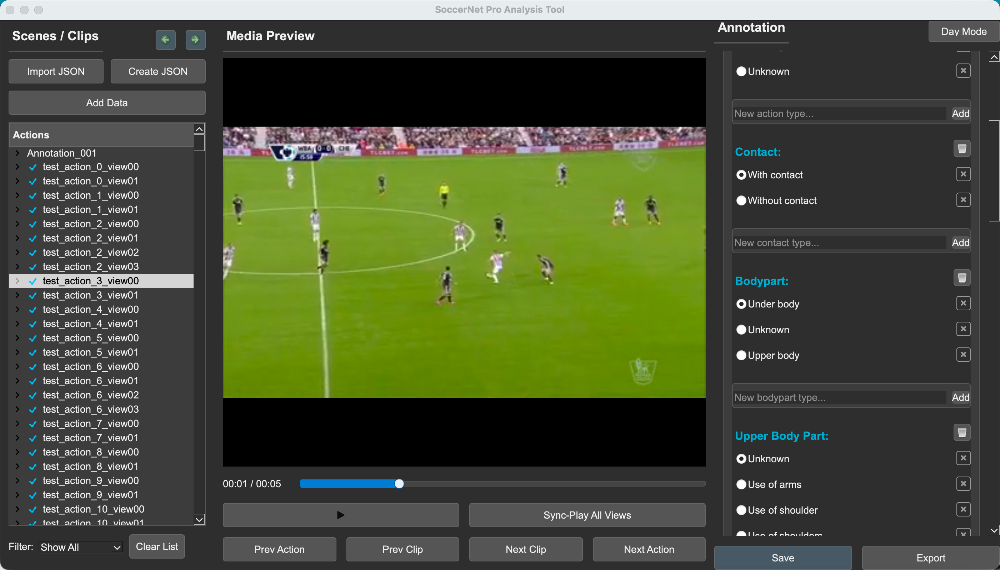

GUI Overview¶
The OSL Annotation Tool supports two distinct annotation modes: Classification and Localization (Action Spotting). The interface adapts based on the project type selected at startup.
1. Classification Mode¶
Designed for assigning global labels (Single or Multi-label) to video clips.

Left Panel: Clip Management¶
- Scene/Clip List: Displays the list of imported video files.
- Status Icons: A checkmark (✓) indicates the clip has been annotated.
- Add Data: Import new video files into the current project.
- Clear: Clears the current workspace.
- Undo/Redo: Controls to undo or redo annotation actions.
Center Panel: Video Player¶
- Video Display: Main playback area for the selected clip.
- Playback Controls:
- Standard Play/Pause.
- Frame stepping and seeking (1s, 5s).
- Playback speed control (0.25x to 4.0x).
- Multi-View: (If supported) Toggle distinct views for the clip.
Right Panel: Labeling¶
- Task Info: Displays the current task name.
- Label Groups:
- Single Label: Radio buttons for mutually exclusive categories (e.g., Weather).
- Multi Label: Checkboxes for non-exclusive attributes (e.g., Objects present).
- Dynamic Editing: Users can add new label options on the fly using the input field within each group.
- Controls:
- Confirm Annotation: Saves the current selection to the clip.
- Clear Selection: Resets the current selection.
- Save/Export: Options to save the project JSON.
2. Localization Mode (Action Spotting)¶
Designed for marking specific timestamps (spotting) with event labels.
 (Ensure you have a screenshot named
(Ensure you have a screenshot named localization_ui.png in your assets folder)
Left Panel: Sequence Management¶
- Clip List: Hierarchical view of video sequences.
- Project Controls: Load, Add Video, Save, and Export JSON.
- Filter: Filter the list to show "All", "Labelled Only", or "Unlabelled Only".
- Clear All: Resets the entire workspace.
Center Panel: Timeline & Player¶
- Media Preview: Video player with precise seeking.
- Timeline: Visual representation of the video duration.
- Markers: Blue ticks indicate spotted events on the timeline.
- Playback Controls: Includes standard transport controls and variable speed playback.
Right Panel: Annotation & Spotting¶
This panel is divided into a header, a spotting area, and an event list.
Header¶
- Undo/Redo: Dedicated buttons to undo or redo spotting actions and schema changes.
Top: Spotting Controls (Tabs)¶
- Multi-Head Tabs: Organize labels by categories (Heads) such as "Action", "Card", "Goal".
- Label Grid: Click any label button to instantly spot an event at the current playhead time.
- Context Menu: Right-click a label button to Rename or Delete it.
- Add New Label: - Click "+ Add new label at current time" to pause the video, define a new label name, and automatically spot it at the paused timestamp. The video resumes automatically after confirmation.
Bottom: Event List (Table)¶
- Table Columns:
- Time: The timestamp of the event.
- Head: The category of the event.
- Label: The specific label name.
- Interaction:
- Double-click: Jumps the video player to the event's timestamp.
- Right-click: Opens a context menu to Edit Time, Change Head/Label, or Delete Event.